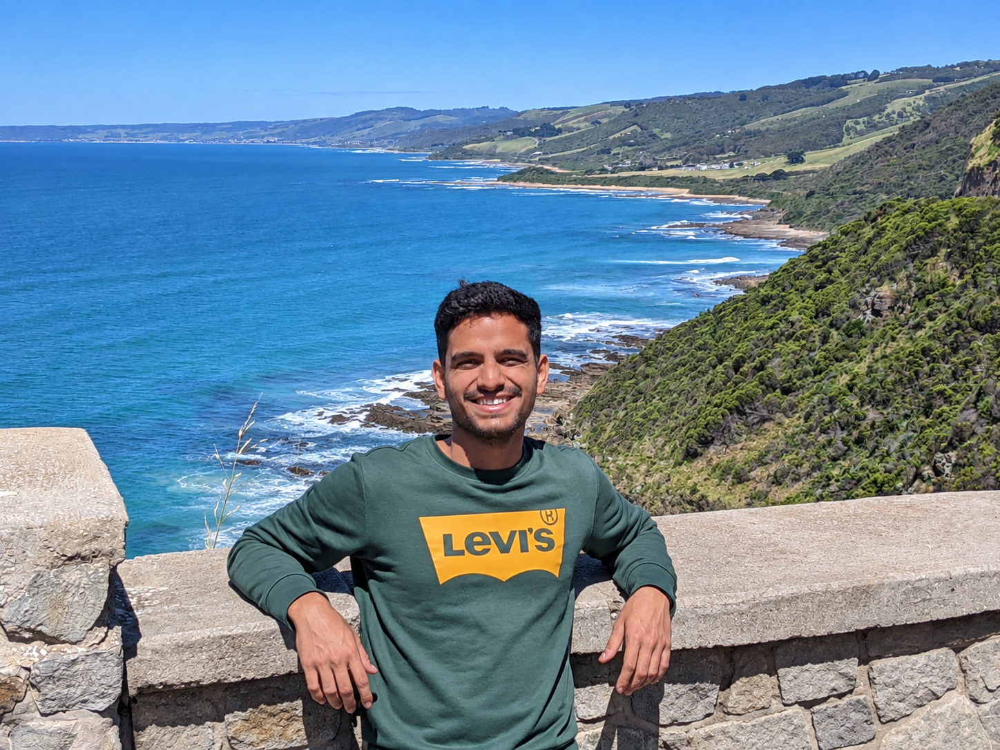
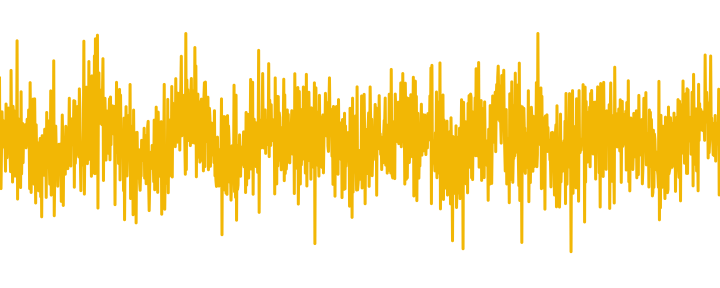
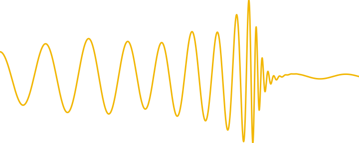

Postdoctoral Fellow · IUCAA, Pune
Turning detector noise into gravitational-wave astrophysics.
I'm Lalit Pathak. I build the statistical and computational methods used to find, characterize, and interpret gravitational-wave signals from compact binary mergers — from rapid parameter estimation to tests of general relativity.


About
My research focuses on extracting astrophysical and fundamental-physics information from gravitational-wave observations. I develop and apply computational and statistical methods for gravitational-wave data analysis, with particular interests in compact-binary parameter estimation, waveform modelling, population inference, gravitational-wave cosmology, and tests of general relativity.
I completed my Ph.D. in Physics at IIT Gandhinagar in 2024, working on fast parameter-estimation frameworks for compact binaries. I'm currently a postdoctoral fellow at IUCAA, Pune, where I lead the PyCBC-based subsolar-mass search for LIGO–Virgo–KAGRA's fourth observing run and work on gravitational-wave lensing, population inference, and machine-learning methods for the stochastic gravitational-wave background.
Positions & education
Postdoctoral Fellow
IUCAA, Pune · Aug 2025 – Present
Postdoctoral Fellow
Dept. of Astronomy & Astrophysics, TIFR, Mumbai · Jul 2024 – Jul 2025
Visiting Research Assistant
Dept. of Astronomy & Astrophysics, TIFR, Mumbai · Feb 2024 – Jul 2024
Ph.D., Physics
IIT Gandhinagar · 2018 – 2024
M.Sc., Physics
University of Delhi · 2017
B.Sc. (Hons.), Physics
Hansraj College, University of Delhi · 2013
Award — TCS Research Scholarship (2019), for Ph.D. research at IIT Gandhinagar.
Research interests
- Parameter estimation
- Fast, faithful inference of compact-binary source properties from gravitational-wave strain, using meshfree approximation and numerical linear algebra to make posteriors tractable at scale.
- Gravitational-wave searches
- Search pipelines for compact-binary signals, including a PyCBC-based subsolar-mass search and low-latency detection with PyCBC Live on IUCAA's search infrastructure.
- Astrophysics & cosmology with GW data
- Population and redshift-distribution inference for binary black holes, and spectral-siren measurements of the Hubble constant.
- Tests of general relativity
- Using gravitational-wave observations to probe deviations from GR, including constraints on the speed and propagation of gravitational waves.
- Machine learning
- Application of machine learning models in various aspects of gravitational-wave data analysis.
Publications
Full and current listings are on my INSPIRE-HEP and Google Scholar profiles.
Selected research publications
-
L. Pathak, H. Phurailatpam, and A. Gopakumar
On the Presence of a Tertiary Compact Object in GW190814
Accepted in ApJ (2026) arXiv:2605.21955
-
A. Sharma, L. Pathak, S. Roy, and A. S. Sengupta
Rapid parameter estimation with the full symphony of compact binary mergers using meshfree approximation
Phys. Rev. D 114, 044043 (2026) arXiv:2508.04172
-
C. Karathanasis, S. Mukherjee, L. Pathak, S. Vallejo-Peña, M. R. Sah, B. Revenu, A. E. Romano, and J. Garcia-Bellido
Blinded Mock Data Challenge: Is the Spectral Siren Technique Robust for Measuring the Hubble Constant?
(2026) arXiv:2604.26273
-
L. Pathak, A. Reza, and A. S. Sengupta
Fast and faithful interpolation of numerical relativity surrogate waveforms using meshfree approximation
Phys. Rev. D 110, 064022 (2024)
-
S. Shukla, L. Pathak, and A. Sengupta
Pinpointing Binary Neutron Star sources with a global network of GW Detectors, including LIGO-Aundha
Phys. Rev. D 109, 044051 (2024)
-
L. Pathak, S. Munishwar, A. Reza, and A. S. Sengupta
Prompt sky localization of compact binary coalescences using meshfree approximation
Phys. Rev. D 109, 024053 (2024)
-
R. Ghosh, S. Nair, L. Pathak, S. Sarkar, and A. S. Sengupta
Does the speed of gravitational waves depend on the source velocity?
Phys. Rev. D 108, 124017 (2023)
-
L. Pathak, A. Reza, and A. S. Sengupta
Fast likelihood evaluation using meshfree approximations for reconstructing compact binary sources
Phys. Rev. D 108, 064055 (2023)
LIGO–Virgo–KAGRA collaboration publications
-
LIGO Scientific, KAGRA, and Virgo Collaborations (A. G. Abac et al.)
Updated Upper Limits on the Isotropic Gravitational-Wave Background from LIGO, Virgo, and KAGRA Data through April 2025
(2026) arXiv:2608.23477
-
LIGO Scientific, KAGRA, and Virgo Collaborations (A. G. Abac et al.)
Constraints on ultralight bosons from merging binary and remnant black holes observed during the second and third parts of the fourth LIGO-Virgo-KAGRA observing run
(2026) arXiv:2608.11620
-
L. Sun et al., LIGO Scientific, KAGRA, and Virgo Collaborations
LIGO A♯: Detector Design and Science Prospects Beyond A+
(2026) arXiv:2608.11673
-
LIGO Scientific, KAGRA, and Virgo Collaborations (A. G. Abac et al.)
GWTC-5.0: Tests of General Relativity
(2026) arXiv:2607.19293
-
LIGO Scientific, KAGRA, and Virgo Collaborations (A. G. Abac et al.)
Open Data from LIGO, Virgo, and KAGRA through the Second Part of the Fourth Observing Run
(2026) arXiv:2605.27090
-
LIGO Scientific, KAGRA, and Virgo Collaborations (A. G. Abac et al.)
GWTC-5.0: Observations from the Second Part of the Fourth LIGO-Virgo-KAGRA Observing Run and Updates to the Gravitational-Wave Transient Catalog
(2026) arXiv:2605.27225
-
LIGO Scientific, KAGRA, and Virgo Collaborations (A. G. Abac et al.)
GWTC-5.0: Population Properties of Merging Compact Binaries
(2026) arXiv:2605.27226
-
LIGO Scientific, KAGRA, and Virgo Collaborations (A. G. Abac et al.)
GWTC-5.0: Constraints on the Cosmic Expansion Rate and Modified Gravitational-wave Propagation
(2026) arXiv:2605.27227
-
LIGO Scientific, KAGRA, and Virgo Collaborations (A. G. Abac et al.)
GWTC-5.0: Methods for Identifying and Characterizing Gravitational-wave Transients
(2026) arXiv:2605.27224
-
LIGO Scientific, KAGRA, and Virgo Collaborations (A. G. Abac et al.)
GWTC-5.0: An Introduction to Version 5.0 of the Gravitational-Wave Transient Catalog
(2026) arXiv:2605.27223
-
LIGO Scientific, KAGRA, and Virgo Collaborations (A. G. Abac et al.)
GWTC-4.0: Updating the Gravitational-Wave Transient Catalog with Observations from the First Part of the Fourth LIGO-Virgo-KAGRA Observing Run
(2025) arXiv:2508.18082
-
LIGO Scientific, KAGRA, and Virgo Collaborations (A. G. Abac et al.)
GWTC-4.0: Population Properties of Merging Compact Binaries
(2025) arXiv:2508.18083
-
LIGO Scientific, KAGRA, and Virgo Collaborations (A. G. Abac et al.)
GWTC-4.0: Methods for Identifying and Characterizing Gravitational-wave Transients
(2025) arXiv:2508.18081
-
LIGO Scientific, KAGRA, and Virgo Collaborations (A. G. Abac et al.)
GWTC-4.0: An Introduction to Version 4.0 of the Gravitational-Wave Transient Catalog
Astrophys. J. Lett. 995 (2025) 1, L18
Talks & conference presentations
-
Rapid construction of compact binary sources using meshfree approximation
Oral presentation, AAPCOS 2023, SINP, Kolkata
-
Rapid construction of compact binary sources using meshfree approximation
Poster, GWPAW 2022, Melbourne, Australia
-
Meshfree interpolation of likelihood for fast parameter estimation of CBCs
AAPS-DACG Workshop, 2021
-
Meshfree interpolation of likelihood for fast parameter estimation of CBCs
Poster (online), GWPAW 2021, Hannover, Germany
Schools & workshops
-
GW Summer School 2023 — Numerical Relativity
ICTS, Bengaluru
-
GW Summer School 2022 — Astrophysics of GW sources, stellar structure and evolution, compact-binary evolutionary history
ICTS, Bengaluru
-
Newton–Bhabha Workshop on Gravitational Wave Astronomy
IUCAA, Pune (2019)
Teaching & outreach
This section is being updated — check back soon for course, mentoring, and outreach details.
Hobbies
Beyond research, I enjoy spending time on a few interests that keep me curious, creative, and away from a computer screen.
Photography
A way of slowing down and paying attention to details, light, and the world around me.
Exploring Ajanta and Ellora Caves
A small selection of photographs from exploring the caves and their remarkable rock-cut architecture.
Get in touch
For collaboration, questions about my work, or anything else — email is the best way to reach me.
lalit.pathak@iucaa.inInter-University Centre for Astronomy and Astrophysics (IUCAA), Pune, India
Elsewhere
- ORCID 0000-0002-9523-7945
- INSPIRE-HEP Author profile
- Google Scholar Citations
- GitHub lalit-pathak
- Curriculum Vitae Download PDF